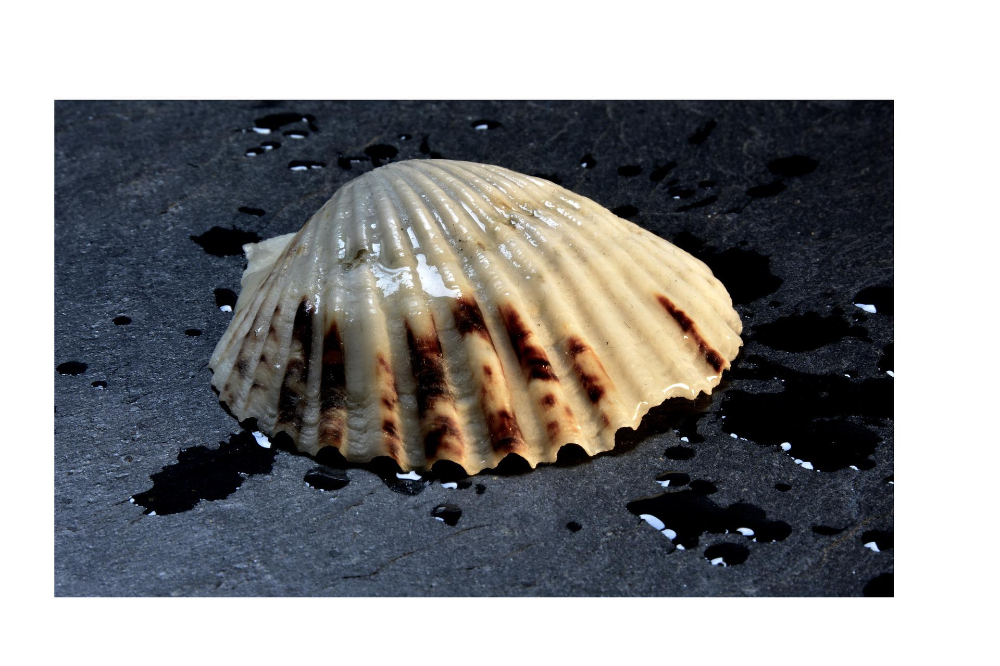
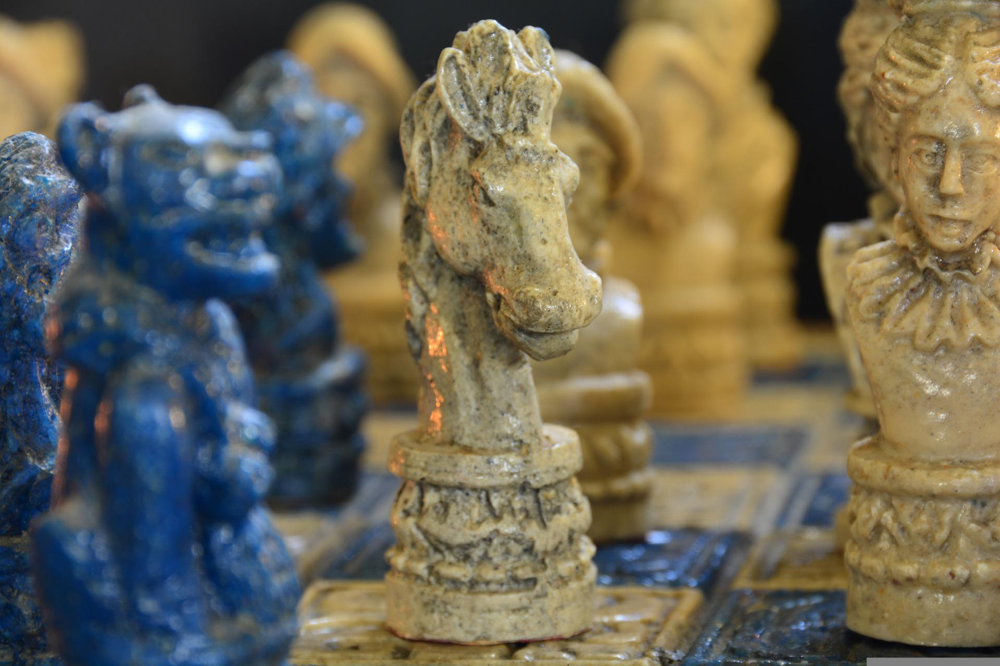
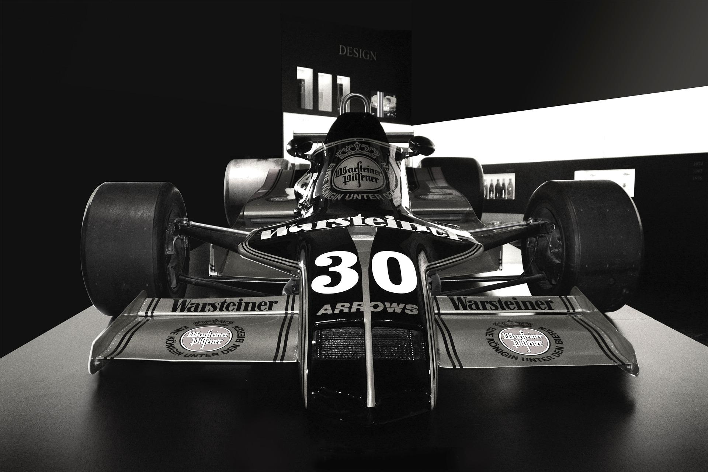
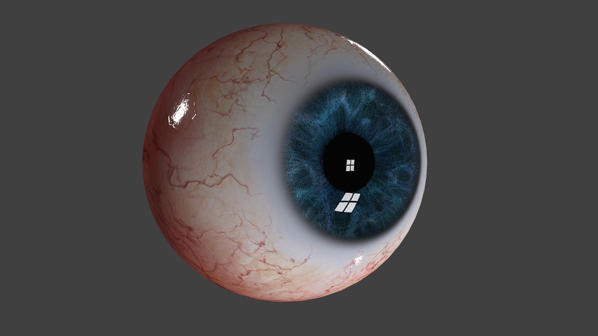

FOTORREALISMO


El fotorrealismo es el movimiento artístico surgido en Estados Unidos a mediados del siglo XX como respuesta al Expresionismo abstracto y el minimalismo. La principal consigna del fotorrealismo era reproducir de la forma más realista la imagen de una fotografía a través de medios como la pintura o el dibujo, entre otros. Este movimiento se desarrolló a partir del pop art y la popularidad de la cámara instantánea.Es por ello que la pintura se volcó hacia la deformación de las figuras, hasta llegar finalmente a la abstracción. Pese a esto, varios artistas se resistían al arte abstracto, como los realistas, quienes tuvieron influencia hasta la década de 1950, cuando fueron opacados por el expresionismo abstracto.

Cuando la fotografía era todavía un arte incipiente, los fotógrafos imitaron los motivos estéticos de la pintura como medio de reivindicación. No obstante, estos trabajos consistían en la mera imitación de otra arte, por lo que la fotografía sólo alcanzo el status de arte al descubrir y explorar sus propias posibilidades. Una vez se extendió el uso de esta tecnología, la pintura realista perdió su propósito, pues los retratos eran más fieles en una foto que a través de pinceladas.

En medio de todo lo anterior, el fotorrealismo se originó concretamente en la década de 1960 y 1970. El término fue acuñado por el comerciante de arte estadounidense Louis K. Meisel en 1969, quien en 1970 lo incluyó dentro del catálogo del Museo Whitney. Luego de esta primera denominación, Stuart M. Speiser encargó una gran colección de obras fotorrealistas, para lo que Louis K. Meisel señaló las cinco condiciones para ser un fotorrealista.

Primero, utilizar una cámara capturar una imagen; segundo, trasladar la imagen al lienzo a través de un medio mecánico o semimecánico; tercero, tener la capacidad para crear una obra que parezca fotográfica; cuarto, haber exhibido su obra en 1972; quinto, haber dedicado al menos un lustro al fotorrealismo

Actualmente, el fotorrealismo hace parte de las técnicas de modelado por computador. A través de algoritmos y cálculos complejos, los ingenieros e informáticos logran componer espacios e imágenes que parecen tomados por una cámara fotográfica, y que tienen múltiples funciones, principalmente publicitarias y comerciales. Los algoritmos más utilizados para esto son el Raytracing y la Radiosidad.